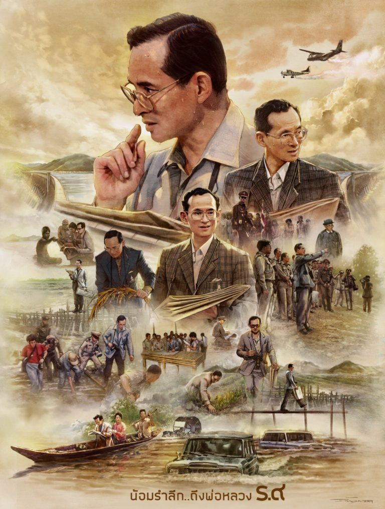

In Thailand, the commemorative day is celebrated as Father’s Day in loving memory of a monarch who dedicated his life to serve the people as the Father of the Nation. The Thai-Norwegian Chamber of Commerce joins the nation in commemorating the great king and to celebrate the king’s work in conserving soil resources essential for food security and sustainable development.
Time line of Majesty King Bhumibol Adulyadej :
1927 Dec - He is born in Massachusetts state Cambridge in United States of America in December 5th in1927 as the son of King of Sonkraanakarin who is 69th son of Rama 5.
1945 Jun - He enters Lausanne University to study Economics and Politics.
But he is absent from school after World War 2 and goes back to Thailand.
1946 Jun - While he comes back to Thailand his big brother Rama 8 is dead and 12 hour after his dead Rama 9 becomes king. But he returns to Swizerland soon and continues to study in Lausanne University after that.
1950 Apr - He gets married with Sirikit Kitiyakara.
1950 May - Rama 9's coronation ceremony.
1952 Jun - He completes his studies in Lausanne University and comes back to Thailand as a "king".
1956 Jun - Followed by Thai Buddhism tradition, he lives away in the heart of mountain and becomes a priest.
1963 May - Thai and Japan are the same monarchy country for a long time. So Thai Royal Family and Japan Imperial Family have been had a good relationship in history. In 1963 Rama 9 comes to Japan for the first time and talks with the emperor Showa.
1969 May - Royal Hilltribe Projects, His Majesty the King introduced a comprehensive programme to assist the northern hilltribe people, who were engaging in unsustainable farming practices.
1971 Nov - Royal Rain Project ,His Majesty the King is often compared to the life-giving rains because his pioneering work in rain-making. Since 1971, the techniques by His Majesty have been used to bring brought relief to farmers.
1986 Sep - Receives IAUP Peace Award presented by the International Association of University Presidents.
1989 Feb - Pa Sak Jolasid Dam Project.
1992 Nov - Receives UNEP Gold Medal of Distinction presented by the UN Environment Programme.
1993 Feb - The Chaipattana Aerator, Concerned with the quality of water in the Kingdom, His Majesty developed a device that keeps water oxygenated and healthy. Its simple design and low cost make it easy to build and maintain, thus facilitating wide application nationwide.
1995 Dec - Agricola Medal, presented by the Food and Agriculture Organization, December 1995
2000 May - Receives WHO Plaque, presented by the World Health Organization.
2001 May - Renewable Energy, Biodiesel production is the production of diesel fuel from renewable natural resources.
2006 May - Receives UNDP Human Development Lifetime Achievement Award, presented by the UN Development Programme.
2006 Jun - Rama 9's 60th enthronement ceremony JUN 09, 2006, Kings and Princes from the monarchy countries gather and congratulate him.
2007 Nov - Receives IFIA Cup 2007, presented by the International Federation of Inventors Association.
2010 Jul - Moisture Retention Dam Project.
2016 Oct - Dies on 13 Oct 2016 at Siriraj Piyamaharajkarun Hospital, Bangkok, Thailand. Age of 89 years.
You can read more about THE LIFE AND WORK OF HIS MAJESTY KING BHUMIBOL ADULYADEJ